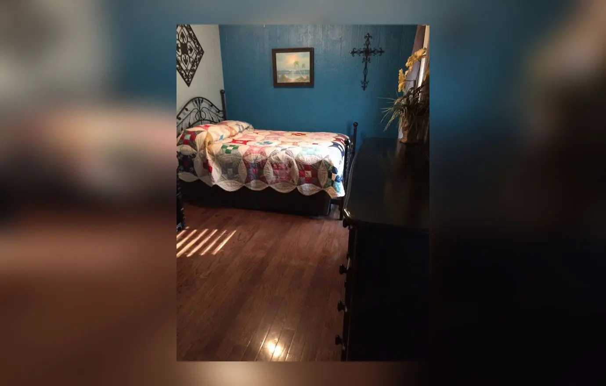
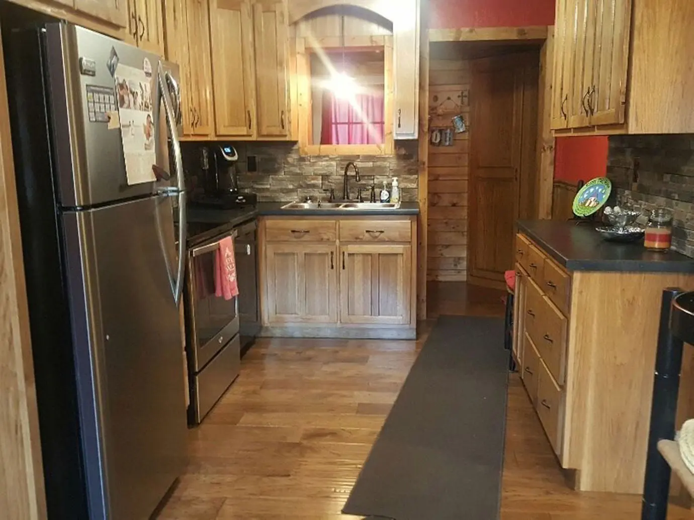
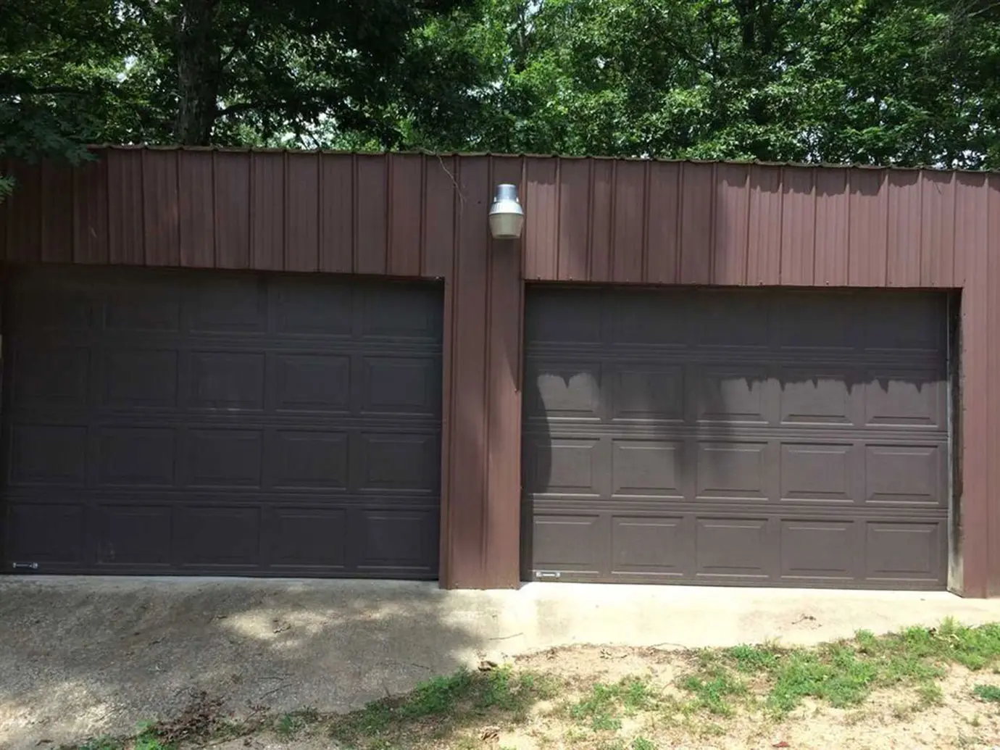
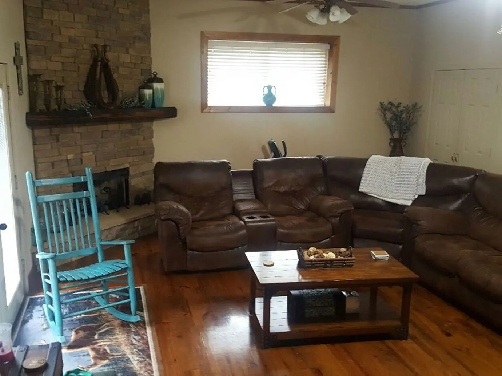
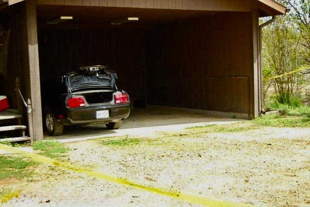
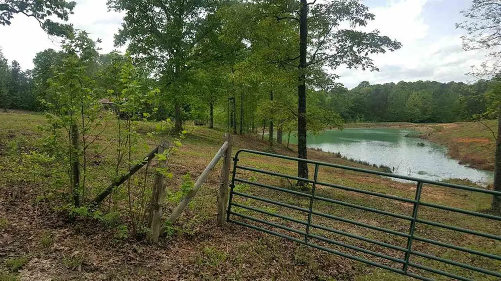
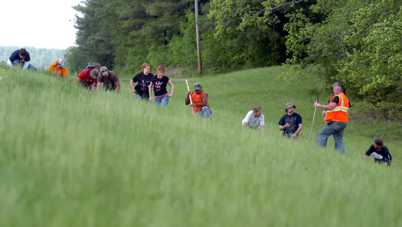
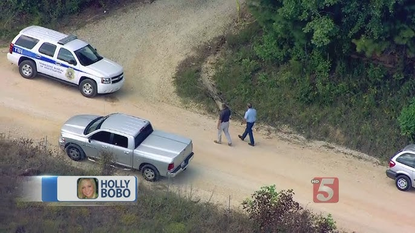
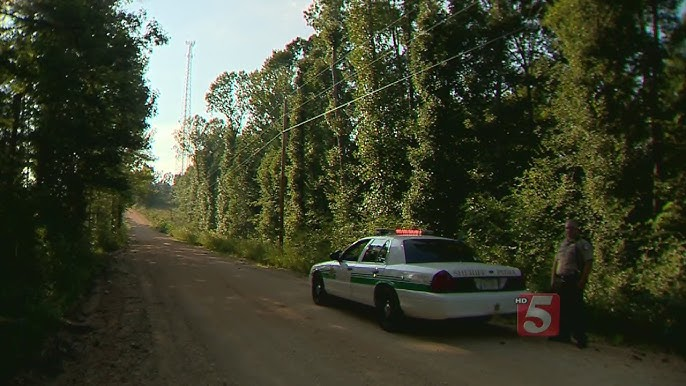

On the morning of April 13, 2011, a 20-year-old nursing student was taken from her home in rural Decatur County, Tennessee, and was never seen alive again. This is the geographic story of that morning — told through cell tower pings, phone records, and physical evidence introduced at the trial of Zachary Adams.
As of now, this is a living document being updated as I round up details. I will clean up the overlapping labels after sorting/mapping the last of the known info.
4:00 AM: Holly Bobo, 20, a nursing student at UT Martin — Parsons campus, is up.
The Bobos live at 681 Swan Johnson Road in an unincorporated area south of Parsons — surrounded by woods, farms and quiet two-lane roads.


4:30 AM: Holly is studying for a test. Her mother Karen makes strawberry muffins and packs her lunch.
5:03 AM: Holly texts Drew "No i swear 2 god." Her phone registers on the home tower sector.
5:20 AM: Drew texts Holly "Me n dad headed huntn." His phone is on his home sector in the Parsons area, moving toward Bath Springs.
5:40 AM: Hunter Bo Brasher is moving through the pre-dawn woods on Donna Goth's Bath Springs property when he comes across two men in camouflage still sitting in their truck. He recognizes one as Harold "Boo" Scott, who had umpired some of his high school baseball games. The other introduces himself as "Boo's" son, Drew, and explains he's dating the landowner's granddaughter and has permission to hunt there. Brasher accepts that and moves on.
When Brasher circles back later, the truck is gone. This is the last confirmed placement of Drew Scott in Bath Springs.
Per TBI report 98 (Walker), Drew and "Boo" were "essentially run off" the property. The record does not establish where they went next.
5:54 AM: Zach's phone is active. He lives next door to Dick Adams with his girlfriend Rebecca Earp.
6:00 AM: Holly's father Dana gets up early and is out the door before 6:00 AM, headed to a job site in Lynen, Perry County for McKenzie Tree Service.
6:50 AM: Jason Autry's phone sends a single text to his girlfriend in Camden — pinging the cell tower near her home. After that, his phone goes quiet for ninety minutes.
7:00 AM: Karen leaves for Scotts Hill Middle School, where she teaches. As she walks to her car, she hears a loud truck engine somewhere nearby.

7:01 AM: Karen places a 14-minute call to Tina while driving to Scotts Hill Middle School. She is mobile and en route. The call runs until roughly 7:15 AM.
7:04 AM: Two doors down from the Bobo residence, neighbor James Barnes gets a text from his friend Keith Clark. Clark is already at Barnes' house; the two are working on Barnes' pickup.
7:05 AM: Holly texts Drew "Let me tell u sumthin, i have studied till i cant possibly study anymore for this test!"
This is Holly's last outgoing text that appears in both carrier records and the SIM card extraction.
7:15 AM: Karen's phone call with Tina ends around this time.
John "Dick" Adams — Zach and Dylan's grandfather — leaves the house for work. Dylan is still in bed.
Dick has worked the day shift with his neighbor Billy Bell for years.
Between 7:18 and 7:29 AM: Holly and Drew trade six failed call attempts — neither connecting.
During all six attempts, both phones register on the same Sector 3 Pleasanty/Decaturville tower: Holly's home sector, northwest of Parsons.
Drew's phone is not on the Bath Springs tower. It had left Bath Springs at some point after the 5:40 AM Brasher encounter.
The exact sequence from carrier records:
- 7:18:56 AM: (Drew → Holly, 0s)
- 7:19:24 AM: (Holly → Drew, 0s)
- 7:21:22 AM: (Drew → Holly, 0s)
- ~7:21 AM: (Holly → Karen) — Holly calls Karen about the Bath Springs hunting property dispute. Karen, still in the school parking lot, works the phones to try to sort out the permission issue. The dispute had actually resolved at 5:40 AM when Brasher's presence caused Drew and "Boo" to leave — but Drew would later present it to Karen as a current, in-progress situation.
- 7:25:56 AM: (Holly → Drew, 1s)
- 7:28:42 AM: (Drew → Holly, 0s)
- 7:29:30 AM: (Holly → Drew, 0s)
- ~7:31 AM: (Karen → Drew, 94 seconds) — Drew's phone was still on Holly's home sector. Karen told him the permission issue was cleared. She then went inside the school — a few minutes late to her class — believing she had resolved an active problem and that Drew was in Bath Springs.
~7:33 AM: Holly places a final 0-second call to Drew — and her phone goes silent for six minutes. This is her last outgoing call.
7:33:18 AM: The family dog Rascal is barking. Clint's phone rings — it's his friend Chad Marshall, a call that wasn't unusual for that hour. Clint silences it and stays in bed, assuming the barking will stop. He lies there for about ten minutes before giving up and getting up.
During the next six minutes of cell phone inactivity re: Holly and Drew, two neighbors independently report hearing a woman screaming from the direction of the Bobo property.
- Ed Barnes hears "Stop. I said stop" and a cut-off scream.
- John Babb hears a howling sound he initially attributes to cats fighting.

7:40 AM: The six-minute silence ends when Drew's phone dials Holly — 0 seconds.
Clint moves through the dark house without turning on any lights. He checks the front sidelights first — nothing. Then he hears voices coming from the carport. He lifts the venetian blinds slightly: through the gap he can see the partial shoulders and arms of two people kneeling, facing each other. One male, one female.
He recognizes Holly's voice. The male is in full camouflage, including a face covering, speaking calmly — a few words at a time, measured. Holly answers in single words. She sounds upset, like maybe they're breaking up. The male voice sounds like Drew's — specifically, the way Drew's voice came through Clint's bedroom wall at night when Drew and Holly would talk in her room. Clint assumes it's Drew.

7:41 AM: A text appears in carrier records as sent from Holly's number to Drew "well your still gonna hunt there" (exact as sent).
The message at 7:41 AM does not appear in the SIM card extraction from Holly's phone, which contains no data after 5:20 AM. That discrepancy was apparently never noticed or investigated.
~7:41 AM: James Barnes and his girlfriend get in the truck and drive to the Bobo home, pulling into the driveway — engine off, watching the house. There are no cars in front. After a few minutes of silence, they leave for work. On his way to work, Barnes calls his mother, Kathy Wise, who lives on the same property.
7:42 AM: Drew calls Holly again — 0 seconds. These are Drew's attempts, not Holly's.
7:45 AM: Kathy Wise calls Scotts Hill Middle School first — to relay the message about the screams. Karen is in class; Kathy has to leave it with the school secretary. She does not drive over to the Bobo house yet.
The call itself is a bit unusual: Kathy and Karen had a long-running animosity. That she picks up the phone at all signals how alarmed she is. (Did Kathy call Karen after leaving a message with the school secretary?) This is also when Holly normally leaves for nursing school to arrive by 7:55.
Drew's brother, Derek Scott, worked with "Boo" at the Food Giant in Parsons.
~7:50 AM: Per Derek, "Boo" arrived at Appoxly 7:50 AM — still wearing his hunting camouflage — and immediately told Derek that someone had taken Holly.
Clint had not yet reached Karen. Karen had not yet called 911. No documented account explains how "Boo" would know that Holly had been taken at that hour.
7:51 AM: Clint calls Karen — no answer.
7:52 AM: Clint calls Karen — no answer.
7:53 AM: The Scott household phone calls Drew (41 seconds) — Per Richie Pratt, Drew is already at work at this point.
7:53 AM: Clint texts Karen "Call me ASAP."
7:54 AM: Drew calls Holly (0 seconds).
7:56 AM: Karen calls back, already alarmed by a message she'd received from Kathy Wise about screaming at the house.
Clint tells Karen that Holly's car is still in the carport and that he thinks he can see Drew with Holly in the carport.
Karen says "That's not Drew" — she had just spoken to Drew less than half an hour earlier and believed him to be miles away in Bath Springs. She tells Clint to call all the neighbors and to get a gun and shoot him.
Clint protests that it's Holly and Drew.
Karen hangs up.
After the voices go quiet, Clint catches a glimpse through the back window and observes:
- Holly and the man in camo are walking together toward the tree line — possibly holding hands.
- Holly is not being dragged. She appears to walk voluntarily.
- The family's retriever, Champ, is walking calmly behind them, tail wagging.
- Neither figure looks back.
In the open air, the male figure's build looks different to Clint:
- Clint believes the male is heavier and stockier than Drew's lean 19-year-old frame.
- Clint thinks maybe it's his cousin Richie Pratt, who hunted the property sometimes and was built more like an older, heavier man.
- The object in the male's right hand looks like a bird call, roughly 6 to 8 inches long.
Clint notes that despite Holly having a purse, a lunchbox, and nursing notebooks with her that morning, he sees none of them. He's studying the figures closely enough to describe what's in the man's hand — he would have noticed if she were carrying anything.

7:59 AM: While in the car, Karen uses Brumley's phone to call 911 and initially reaches the wrong county's dispatcher before getting routed to Decatur County.
Fellow teacher Terry Brumley drives Karen out of the school parking lot and heads toward the Bobo home.
Clint steps outside toward the carport — the cold hits harder than expected. He goes back in and changes: green sweatpants, a Drake waterfowl jacket, socks.
He gets a Colt revolver from his parents' bedroom nightstand and walks out through the open garage.
Near the passenger side of Holly's car, where the two figures had been kneeling, Clint finds blood — a small pool of low-velocity splatter, four or five drops.
He reaches for an explanation: maybe Drew brought a turkey up for Holly to see. Then he thinks: where is the turkey? He walks toward the trail. No one. No birds. No wind.
The blood was not there when Dana or Karen left.

Fifteen minutes after her phone call to the school, Kathy Wise pulls into the Bobo driveway in person to check on things. She tells Clint the screams she heard were 15 to 20 minutes earlier.
8:06 AM: Two minutes before Clint dials 911, the Scott household places a call to Richie Pratt (1 min 11 sec).
Per Richie's own TBI statement (Report 358, SA Brent Booth), Sheila Scott called to tell him that Clint had seen somebody take Holly and to ask whether it would be a good idea to tell Drew.
Richie Pratt is Drew's alibi — the only person in the reviewed materials who places Drew at work before 8 AM. He is in a committed relationship with Lisa Douglas, Drew's maternal aunt, who lives next door to the Scotts. He is the person who got Drew his job with the city of Parsons.
The question the timing raises is direct: how did the Scott household know Holly had been taken at 8:06 AM — before Clint called 911, before law enforcement was notified, and before Karen had reached anyone at the house?
8:08 AM: Clint calls 911 from the yard, gun in hand, scanning the tree line.
The search for Holly Bobo begins.

8:09 AM: Deputy Tony Weber arrives at the Bobo residence — one minute after Clint's 911 call.
Investigators will later conclude that Holly was taken as she stepped out to her car for nursing school — she is never seen again.
8:11 AM: Holly's phone hits a new tower on CR 1253. It is already moving — away from the house, headed northeast.
8:16 AM: The phone hits the Shiloh Rd. Tower near Natchez Trace State Park, still tracking northeast.
8:19 AM: After ninety silent minutes, Jason Autry's phone wakes up — a text to Zach Adams. Both phones are on the same tower: Holiday/Yellow Springs, near Zach's residence.
8:26 AM: Holly's phone hits on the same tower but different sector. Her phone is still in the Shiloh Rd. area.
8:26 AM: Drew's phone registers on the Shiloh Rd. sector — the same tower sector where Holly's phone stopped moving between 8:26 and 8:56 AM that morning, and where her skeletal remains were ultimately discovered by deer hunters in September 2014.
This is not noted anywhere in the existing public record of the case. Drew's phone and Holly's phone are on the same sector at the same time, in a rural area miles from the Bobo home, during the window in which Holly's phone goes permanently silent.
8:30 AM: Zach texts Jason back. Same tower the whole time.
8:53 AM: Zach and Jason call each other. Same tower the whole time.
8:55 AM: Zach and Jason call each other. Same tower the whole time.
For fifteen minutes, the prosecution's cell expert says all three phones — Holly's, Zach's, and Jason's — are on the same tower. The defense's expert says they were on different sectors.
This is the forensic question at the heart of the case.
Four pings in rapid succession — the kind of pattern a phone leaves behind when it's in a moving vehicle.
At 9:15 AM, TBI Special Agent Brent Booth arrives at the Bobo home. By then, 100–200 people are already on the property. Terry Dicus is securing the scene; a K-9 unit is dispatched into the woods.
Around the same time, Dick Adams later says he saw Zach, Dylan, and Shayne driving south on Highway 641, in Dylan's pickup.
9:25 AM: Holly's phone pings the CR 1257 tower, Sector 3 — placing it in the rural wooded area off W Natchez Trace Road, near where her lunchbox and notebook would later be recovered. It is the final recorded signal her phone will ever produce.
After this, the line goes dead — permanently. The phone is either powered down or has its battery removed.
9:42 AM: Seventeen minutes after Holly's phone goes silent, Zach and Jason resurface — this time at Birdsong, a tower near the Tennessee River about twenty miles east of where they were all morning. They've moved.
Both phones stay on the Birdsong East sector for the next fifty minutes.
Both phones flip briefly to Birdsong West. Then Autry's drops off the data entirely.
10:38 AM: Adams' phone pings the tower closest to his home in Holladay. He has left the Birdsong area.
A parking-lot camera near the abduction area captures three vehicles passing within minutes:
11:04 AM: A black SUV.
11:05 AM: Two more black SUVs.
11:07 AM: An extended-cab pickup truck like Zach Adams' dark Chevy Silverado with Georgia plates.
Investigators later note that a TBI special agent was throwing a retirement party that morning — many of the SUVs are likely officers heading to the Bobo home. The pickup truck is something else.
11:12 AM: Adams' phone pings a tower near the CB&S Bank ATM. Surveillance footage from that ATM is later introduced at trial.
Shayne Austin is at his trailer when satellite installer Randy McGee arrives around noon. The install was scheduled in advance — not a same-day call. Shayne is alone.
Cell-tower data lines up with this: Shayne's phone is on his home tower from 9:23 AM through 10:55 AM, with no earlier activity that morning.
12:17 PM: More than four hours after the abduction — Terry Britt, a confidential informant in Parsons, gets a phone call from his ex-wife Brenda Seagraves, who tells him about Holly's disappearance. Per his later trial testimony, this is how he first hears of it.
12:20 PM: Britt calls his wife Janet. The call runs 2 minutes 56 seconds.
Janet would later tell investigators the two had been "together all day." You don't call someone standing next to you.
12:35 PM: Adams' phone pings a tower in the Parsons area — more than four hours after the abduction. It is his last event in the phone timeline (of record).
1:45 PM: Decatur County deputies arrive at the Britt residence. No one is home. Three vehicles are gone.
Dottie's house sits between Zach Adams' home and Shayne Austin's. Inside, Victor Dinsmore is remodeling and Debbie Dorris is cleaning — both there most of the day.
Between 2:30 and 3:00 PM: >Three men pull up in a black pickup. Victor identifies the truck as Dylan Adams'. Debbie identifies one of the men as Jason Autry — she knew his mother. The third is Shayne Austin.
Zach asks Victor for a joint and the men smoke it together. Then Zach and Shayne start fighting. Jason breaks it up. They drive away.
The Britts roll back into their driveway and unload a bathtub. They say they bought it from Allgood's.
The receipt is handwritten. Allgood's has no matching store copy. No employee remembers the sale.
Judy Evans — aunt to both Shayne Austin and Jason Autry — drives out to the property she keeps for her horses. The barn there is really just a corn crib: a two-door building in poor shape. Feeding her horses is part of her daily routine; today is no different.
If anyone were screaming inside the corn crib, Judy will later testify, it would be audible from the street.
Searchers comb the road network around the Bobo home.
Driving slowly along Gooch Road, a cattle farmer named Gerald Stephens spots a pink item on the right shoulder, stops, and identifies it as a pair of women's underwear.
About 300–400 feet up the road, near the Yellow Springs community, he picks up a folded wad of paper that turns out to be one of Holly's school papers, with her name and address on it.
Stephens later testifies that the residence further down the road from the underwear find was Shayne Austin's mobile home.
Booth, the investigator on scene, records the underwear's find spot using the nearest landmark: about 75 feet from Austin's driveway, on the road itself.
Lab analysis later confirms the underwear is not Holly's.

Clint wrote this statement the same day Holly disappeared. Four passages define what the investigation had to work with.
2:00 AM: Eighteen hours after Clint's 911 call, TBI lab personnel finish processing the carport. They take the blood, the surrounding evidence, and leave.
Holly has been gone for one day.
By the early hours of April 14, the lab has cleared the carport and the searchers have gone home. No new evidence surfaces.
Holly Bobo's remains would not be found for another three years.
Over the next three years, pieces of evidence surfaced across the region — Holly's lunchbox, her cell phone, a SIM card, nursing papers, and, finally, her remains.


Items recovered between 2011 and 2014
A ginseng hunter named Larry Stone found Holly's skull beneath an upside-down bucket in the woods near a cell tower — roughly three miles from Shayne Austin's home, five from Zachary Adams'.


The proximity of the defendants' homes to the evidence sites and tower coverage areas became one of the central pillars of the case.
In the weeks surrounding Holly's disappearance, Britt makes a striking sequence of purchases:
March 11–12, 2011: New phones.
April 11 (two days before the abduction): 2,000 prepaid minutes.
April 29 (sixteen days after): A chainsaw.
When decomposition-trained cadaver dogs are walked across Britt's property, they alert on his tools — an axe, a shovel, and a hammer.
When investigators first approach Britt, his unprompted opening line is: "I didn't rape nobody." No one had mentioned rape.
Clint Bobo — the only person to hear the voice of his sister's abductor that morning — later says he is 80% sure it was Britt's.
Britt's vehicle matches surveillance footage from the Am Farm near the abduction site. He has a documented history of stalking blonde, blue-eyed women in the area. Before his devices are seized, his computer holds searches for "rape," "abduction," and "kidnapping."
At one point, Britt offers to plead guilty in exchange for a 20-year sentence. At trial, he denies it.
Terry Britt's home sits at the geographic center of the evidence. His phone went silent during the abduction. His alibi collapsed under scrutiny. Dogs alerted on his tools.
Clint Bobo tentatively identified his voice. Britt offered to plead guilty.
He was never charged. Zachary Adams was convicted instead — largely on the testimony of Jason Autry, who took a deal for his cooperation.
Every layer at once — phone pings, recovery sites, and the residences of every person tied to the case — laid out together on a single map.
Use the Tower Coverage button in the corner of the map to overlay the cellular sectors on top.
Witness testimony summaries throughout this scrolly are drawn from Innocent Brothers · Trial Witnesses →